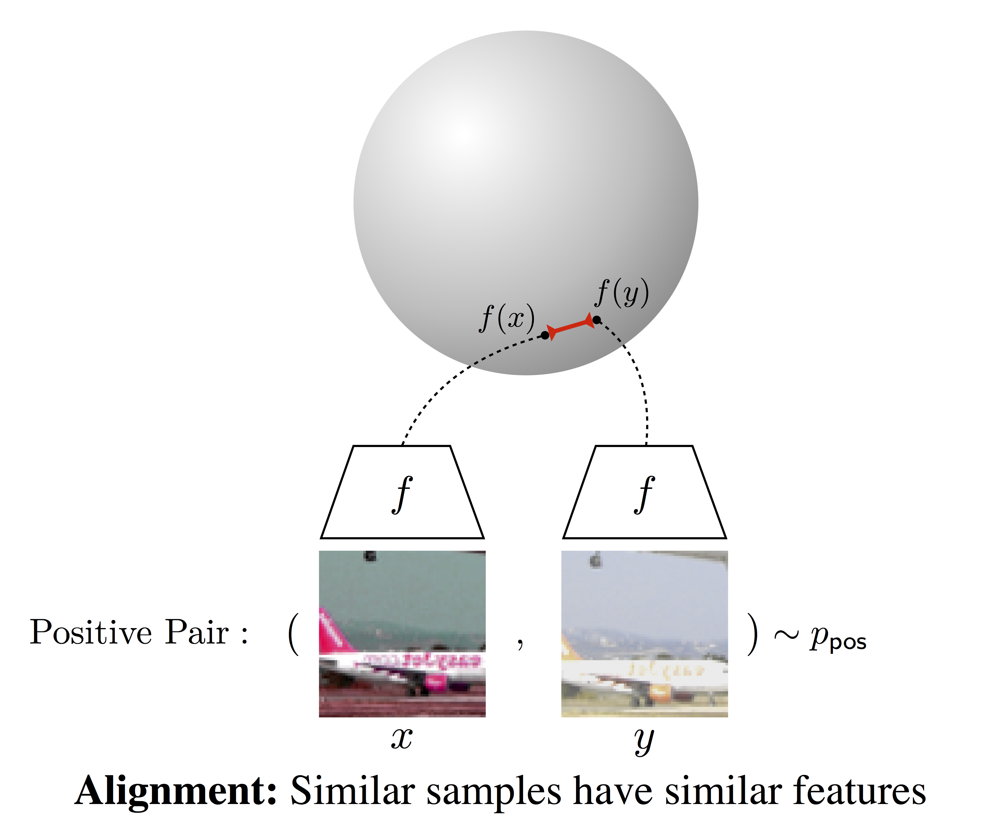
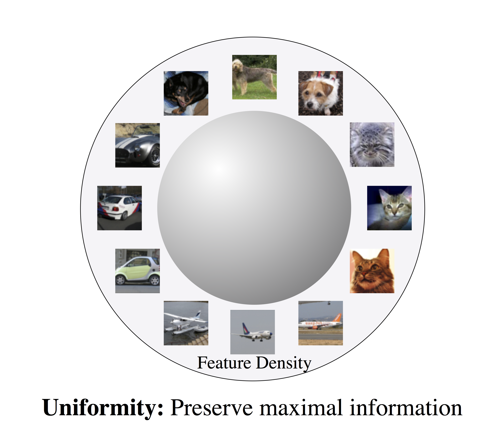
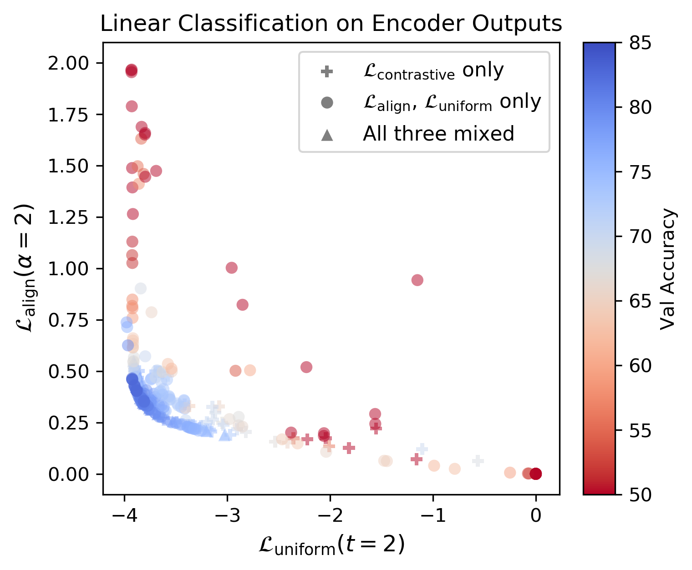
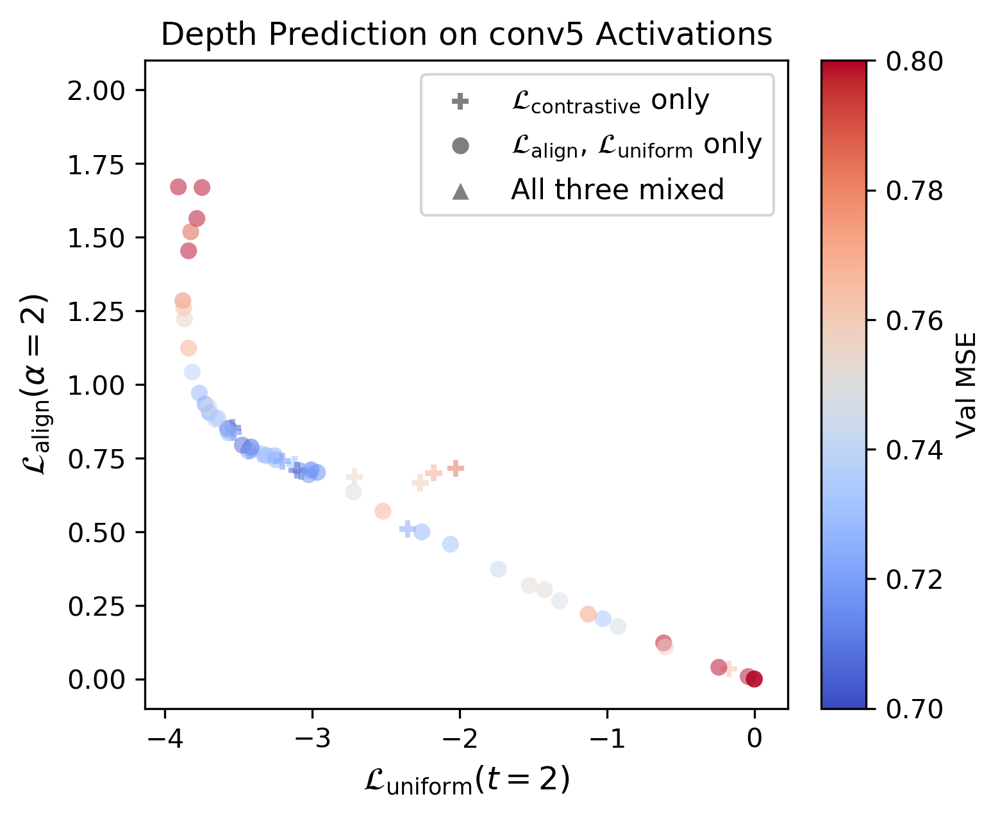
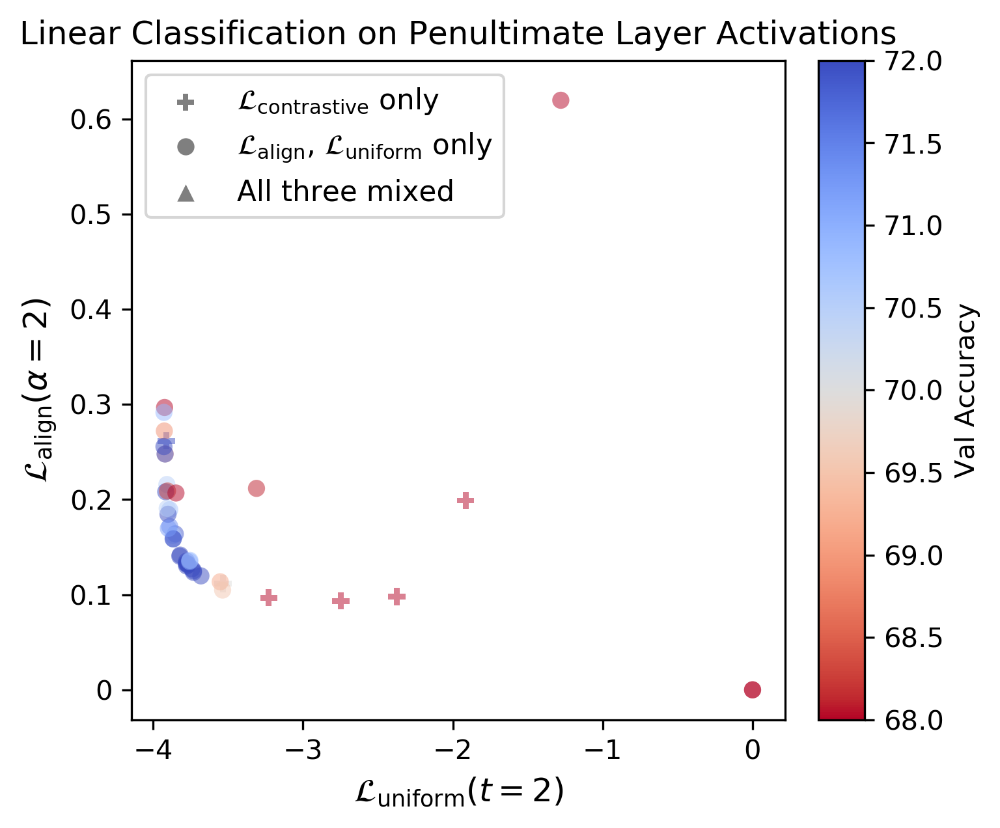
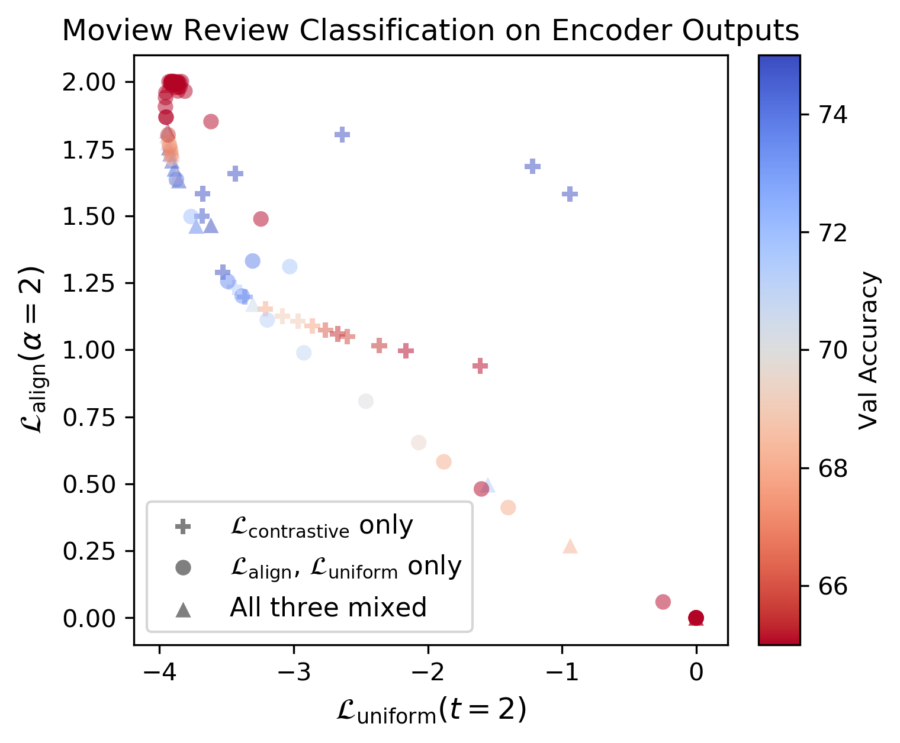
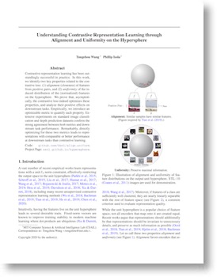

Understanding Contrastive Representation Learning through Alignment and Uniformity on the Hypersphere
Abstract
Contrastive representation learning has been outstandingly successful in practice. In this work, we identify two key properties related to the contrastive loss: (1) alignment (closeness) of features from positive pairs, and (2) uniformity of the induced distribution of the (normalized) features on the hypersphere. We prove that, asymptotically, the contrastive loss optimizes these properties, and analyze their positive effects on downstream tasks. Empirically, we introduce an optimizable metric to quantify each property. Extensive experiments on standard vision and language datasets confirm the strong agreement between both metrics and downstream task performance. Remarkably, directly optimizing for these two metrics leads to representations with comparable or better performance at downstream tasks than contrastive learning.
Alignment and Uniformity of Representations
|  |  |
Theoretical insight:
In the limit of infinite negative samples, the popular contrastive loss decomposes into two terms, optimizing for alignment and uniformity respectively.
Optimizable Metrics for Alignment and Uniformity
# bsz : batch size (number of positive pairs) # d : latent dim # x : Tensor, shape=[bsz, d] # latents for one side of positive pairs # y : Tensor, shape=[bsz, d] # latents for the other side of positive pairs def align_loss(x, y, alpha=2): return (x - y).norm(p=2, dim=1).pow(alpha).mean() def uniform_loss(x, t=2): return torch.pdist(x, p=2).pow(2).mul(-t).exp().mean().log()
Alignment and Uniformity Metrics Agree Well with Representation Quality
- Encoders are evaluated on
Alignment (y-axis),Uniformity (x-axis), anddownstream task performance (color). Blue is better for all tasks.- Aligned and Uniform encoders (lower left corners) consistenly perform better.
STL-10 |
NYU-Depth-V2 |
|  |  |
ImageNet 100 Class Subset |
Moview Review Sentence Polarity(Encoders trained on BookCorpus)
|
|  |  |
|  |
Paperarxiv 2005.10242, 2020. CitationTongzhou Wang, Phillip Isola. "Understanding Contrastive Representation Learning through Alignment and Uniformity on the Hypersphere", arXiv preprint, 2020. Code: GitHub |
bibtex entry
@article{wang2020hypersphere,
title={Understanding Contrastive Representation Learning through Alignment and Uniformity on the Hypersphere},
author={Wang, Tongzhou and Isola, Phillip},
journal={arXiv preprint arXiv:2005.10242},
year={2020}
}
Acknowledgement
We thank Ching-Yao Chuang, Justin Solomon, Yonglong Tian, and Zhenyang Zhang for many helpful comments and suggestions. Tongzhou Wang was supported by the MIT EECS Merrill Lynch Graduate Fellowship.